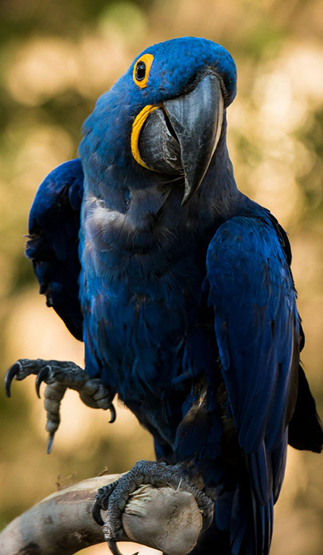
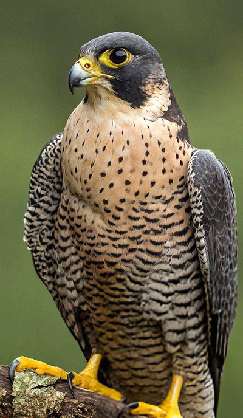
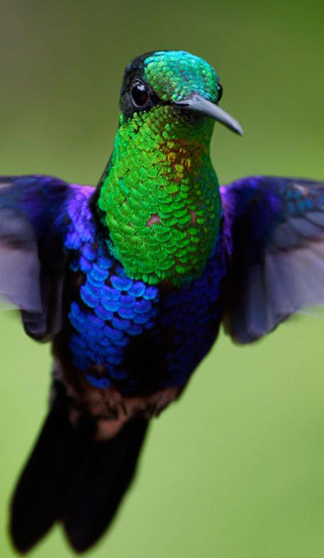

Descubra as Unidades do Clube
Cada unidade tem seu próprio espírito e mascote. Venha conhecer os nossos!

Arara-Azul
Meninas de 10 a 12 anos.

Falcão
Rapazes de 13 a 15 anos.

Beija-flor
Garotas de 13 a 15 anos.

Albatroz
Meninos de 10 a 12 anos.